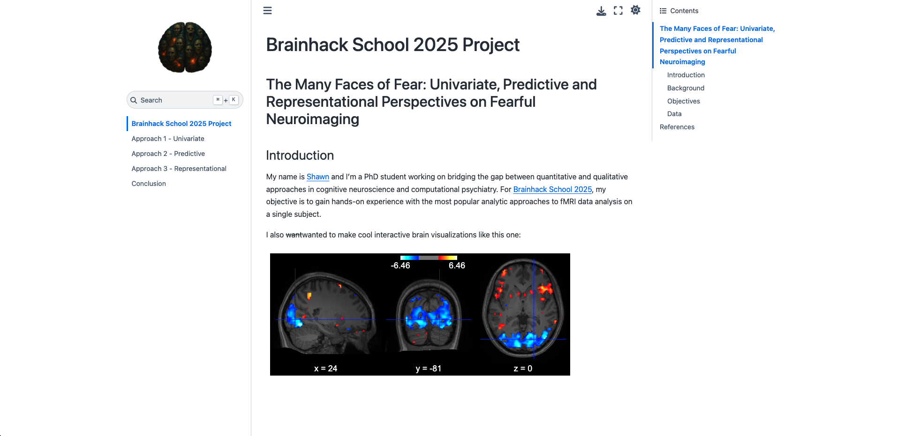

Visiting Researcher
Systems and Intervention Neuroscience Lab · Sungkyukwan University - IBS Center for Neuroscience Imaging Research
2025
- Project on brain-computer interfaces using fMRI and generative models supervised by Professor Hakwan Lau.
Shawn Manuel
PhD student in Psych / AI exploring qualia space computationally.
I am a PhD student working on bridging subjective experience and objective measurement through computational methods in brain and mental health research. My research interests include cognitive and computational neuroscience, machine learning, mental health modeling, fMRI analysis and AI-assisted psychometrics. I am particularly interested in how we can use large language models and other AI tools to better understand and quantify subjective experience in both healthy and clinical populations.
In my free time, I'm a hobbyist hacker and campfire guitar scratcher who enjoys eldritch horror and sci fi fantasy. I'm also a firm believer in Open Source Science, science communication and scientific literacy, and I try to incorporate these values into my work, such as through myXiv.
I don't have a substack, where I write about my thoughts on various subjects, like my approach to prompt engineering.
This website is my first and ongoing attempt at web development (vanilla HTML CSS JS with a bit of Three js), and I plan to use it as a portfolio for both my research and personal projects.
Research focus: Metacognition, anxiety disorders and subjective experience.
Methods: Psychophysics, signal detection theory, psychometrics, computational factor modeling, NLP, machine learning.
Thesis: Quantifying interindividual differences in subjective experience using artificial intelligence for the prediction of psychiatric symptoms
Methods: Psychometrics, computational factor modeling, NLP, machine learning.
Honors work: The influence of interoception on the distribution of concrete and abstract words in the latent structure of dictionaries.
Interests: Cognitive neuroscience, psycholinguistics, open science.
Systems and Intervention Neuroscience Lab · Sungkyukwan University - IBS Center for Neuroscience Imaging Research
2025
ABCD Lab · McGill University Health Centre
2024 to present
Clinique ABA
2021 to 2025
Cohere
2025
PST3100 Neurosciences, cognition and mental health · Université de Montréal
2024
Division de néphrologie · Centre de recherche de l'Hôpital Maisonneuve-Rosemont
2020-2022
1. Manuel, S., Taschereau Dumouchel, V. (2025). From Deep Learning to Depth Psychology: A Review of Representation Learning Across the Mind Sciences. PsyArXiv. [Preprint]
3. Manuel, S., Gagnon, J., Gosselin, F., Taschereau Dumouchel, V. (2025). Towards a Latent Space Cartography of Subjective Experience in Mental Health. Psychiatry and Clinical Neurosciences. [Paper]
2. Taschereau Dumouchel, V., Côté, M., Manuel, S., Valevicius, D., Cushing, C. A., Cortese, A., Lau, H. (2024). Interaction Between the Prefrontal and Visual Cortices Supports Subjective Fear. Philosophical Transactions of the Royal Society B: Biological Sciences. [Paper] [Preprint]
1. Berman, T., Cushing, C. A., Manuel, S., Vachon Presseau, É., Cortese, A., Kawato, M., Woo, C. W., Wager, T., Lau, H., Roy, M., and Taschereau Dumouchel, V. (2024). Modulating Subjective Pain Perception with Decoded MNI space Neurofeedback. Philosophical Transactions of the Royal Society B: Biological Sciences. [Preprint]
2. Manuel, S., (2021). Opération Mind Control : Un historique du consentement en recherche, Journal étudiant le Psy Curieux.
1. Manuel, S., (2021). La folie donne-t-elle naissance à la créativité?, Journal étudiant Le Psy Curieux.
2. Manuel, S., Gosselin, F., Gagnon, J., Taschereau Dumouchel, V. (May 24 26, 2024). Cartographier les différences individuelles dans l'expérience subjective avec l'IA pour la prédiction des symptômes psychiatriques. 46e congrès annuel de la Société Québécoise pour la Recherche en Psychologie, Drummondville, QC, Canada. [Slides]
1. Manuel, S., Gosselin, F., Gagnon, J., Taschereau Dumouchel, V. (May 26 28, 2023). Quantifier les représentations mentales à l'aide du traitement du langage naturel. 45e congrès annuel de la Société Québécoise pour la Recherche en Psychologie, Sherbrooke, QC, Canada. [Slides]
9. Manuel, S., Gosselin, F., Gagnon, J., Taschereau Dumouchel, V. (July 6 9 2025). Comparing Verbal Report Elicitation Methods for Psychiatric Symptom Prediction. 28th Annual Meeting of the Association for the Scientific Study of Consciousness, Heraklion, Crete, Greece. [Poster]
8. Manuel, S., Gosselin, F., Gagnon, J., Taschereau Dumouchel, V. (October 1 3 2024). Towards a Latent Space Cartography of Individual Differences in Subjective Experience Using Large Language Models. Mila Workshop: NLP in the era of generative AI, cognitive sciences, and societal transformation, Montréal, QC, Canada. [Poster]
7. Manuel, S., Gosselin, F., Gagnon, J., Taschereau Dumouchel, V. (August 6 9 2024). Towards a Latent Space Cartography of Individual Differences in Subjective Experience Using Large Language Models. Cognitive Computational Neuroscience, Boston, MA, United States. [Poster]
6. Taschereau Dumouchel, V., Côté, M., Manuel. S., Valevicius, D., and Lau, H. (May 17 22 2024). Information transmission between the ventral visual stream and the prefrontal cortex supports the subjective experience of fear. Vision Sciences Society, Naples, FL, United States.
5. Taschereau Dumouchel, V., Côté, M., Manuel. S., Valevicius, D., and Lau, H. (April 23 26 2024). Information transmission between the ventral visual stream and the prefrontal cortex supports the subjective experience of fear. Social and Affective Neuroscience Society, Toronto, ON, Canada.
4. Manuel, S., Gosselin, F., Gagnon, J., Taschereau Dumouchel, V. (July 6 8 2023). Quantifying High Level Representations Using Verbal Reports and Natural Language Processing. Computational Psychiatry Conference, Dublin, Ireland. [Poster]
3. Manuel, S., Gosselin, F., Gagnon, J., Taschereau Dumouchel, V. (July 17 21 2023). Quantifying High Level Representations Using Verbal Reports and Natural Language Processing. International Society for the Study of Individual Differences, Belfast, Northern Ireland. [Poster]
2. Manuel, S. (20 22 May 2021). L'influence de l'intéroception dans l'ancrage des concepts abstraits et concrets : une approche psycholinguistique. 44e congrès annuel de la Société Québécoise pour la Recherche en Psychologie, Mont Tremblant, QC, Canada.
1. Manuel, S., (21 November 2021). Qu'est ce qu'un mot concret versus un mot abstrait ? Journée scientifique du Centre de recherche en neurosciences cognitives de l'Université du Québec à Montréal, Montréal, QC, Canada. [Best poster presentation award]
TL;DR: To avoid over hyping AI, we should be careful about what is meant by better or more efficient representation learning.
Figures can be mostly reproduced from the repo, and an interactive version of the timeline can be explored on the companion web app.
TL;DR: Neural data analysis project from Brainhack School 2025 comparing GLM, ML and RSA approaches for fMRI.
Code for this project is available here.

Now published in Psychiatry and Clinical Neurosciences.
TL;DR: Master's project linking individual differences in verbal reports of subjective experience to transdiagnostic psychiatric symptom clusters.
Project data and code can be accessed on Github, and explored on the companion web app.
TL;DR: BYOK paper summarizer and podcast generator that accounts for your desired tone and level of complexity, as well as your areas of expertise and blindspots.
Bring your own OpenAI API key.
TL;DR: An email subscription service that sends a random SCP item from the SCP Foundation wiki daily, as well as a web app to browse random items and create SCP items with generative models.